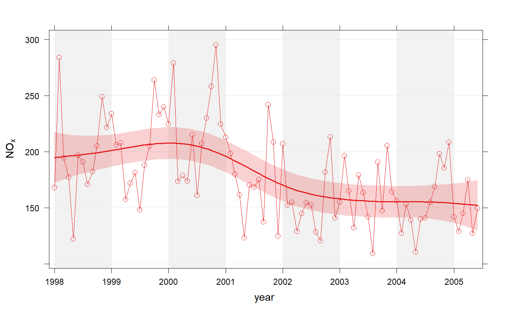

Use non-parametric methods to calculate time series trends
smoothTrend( mydata, pollutant = "nox", deseason = FALSE, type = "default", statistic = "mean", avg.time = "month", percentile = NA, data.thresh = 0, simulate = FALSE, n = 200, autocor = FALSE, cols = "brewer1", shade = "grey95", xlab = "year", y.relation = "same", ref.x = NULL, ref.y = NULL, key.columns = length(percentile), name.pol = pollutant, ci = TRUE, alpha = 0.2, date.breaks = 7, auto.text = TRUE, k = NULL, ... )
| mydata | A data frame containing the field |
|---|---|
| pollutant | The parameter for which a trend test is required. Mandatory. |
| deseason | Should the data be de-deasonalized first? If |
| type |
It is also possible to choose Type can be up length two e.g. |
| statistic | Statistic used for calculating monthly values. Default is
“mean”, but can also be “percentile”. See |
| avg.time | Can be “month” (the default), “season” or “year”. Determines the time over which data should be averaged. Note that for “year”, six or more years are required. For “season” the data are plit up into spring: March, April, May etc. Note that December is considered as belonging to winter of the following year. |
| percentile | Percentile value(s) to use if |
| data.thresh | The data capture threshold to use (
the data using |
| simulate | Should simulations be carried out to determine the
Mann-Kendall tau and p-value. The default is |
| n | Number of bootstrap simulations if |
| autocor | Should autocorrelation be considered in the trend uncertainty
estimates? The default is |
| cols | Colours to use. Can be a vector of colours e.g. |
| shade | The colour used for marking alternate years. Use “white” or “transparent” to remove shading. |
| xlab | x-axis label, by default “year”. |
| y.relation | This determines how the y-axis scale is plotted. "same"
ensures all panels use the same scale and "free" will use panel-specfic
scales. The latter is a useful setting when plotting data with very
different values. ref.x See |
| ref.x | See |
| ref.y | A list with details of the horizontal lines to be added
representing reference line(s). For example, |
| key.columns | Number of columns used if a key is drawn when using the
option |
| name.pol | Names to be given to the pollutant(s). This is useful if you want to give a fuller description of the variables, maybe also including subscripts etc. |
| ci | Should confidence intervals be plotted? The default is
|
| alpha | The alpha transparency of shaded confidence intervals - if plotted. A value of 0 is fully transparent and 1 is fully opaque. |
| date.breaks | Number of major x-axis intervals to use. The function
will try and choose a sensible number of dates/times as well as formatting
the date/time appropriately to the range being considered. This does not
always work as desired automatically. The user can therefore increase or
decrease the number of intervals by adjusting the value of
|
| auto.text | Either |
| k | This is the smoothing parameter used by the |
| ... | Other graphical parameters are passed onto |
As well as generating the plot itself, smoothTrend also
returns an object of class ``openair''. The object includes three main
components: call, the command used to generate the plot;
data, the data frame of summarised information used to make the
plot; and plot, the plot itself. Note that data is a list of
two data frames: data (the original data) and fit (the
smooth fit that has details of the fit and teh uncertainties). If
retained, e.g. using output <- smoothTrend(mydata, "nox"), this
output can be output <- smoothTrend(mydata, "nox"), this output can
be used to recover the data, reproduce or rework the original plot or
undertake further analysis.
An openair output can be manipulated using a number of generic operations,
including print, plot and summarise.
The smoothTrend function provides a flexible way of estimating the
trend in the concentration of a pollutant or other variable. Monthly mean
values are calculated from an hourly (or higher resolution) or daily time
series. There is the option to deseasonalise the data if there is evidence
of a seasonal cycle.
smoothTrend uses a Generalized Additive Model (GAM) from the
gam package to find the most appropriate level of smoothing.
The function is particularly suited to situations where trends are not
monotonic (see discussion with TheilSen for more details on
this). The smoothTrend function is particularly useful as an
exploratory technique e.g. to check how linear or non-linear trends are.
95
confidence intervals are also available through the simulate option.
Residual resampling is used.
Trends can be considered in a very wide range of ways, controlled by setting
type - see examples below.
TheilSen for an alternative method of
calculating trends.
David Carslaw
# load example data from package data(mydata) # trend plot for nox smoothTrend(mydata, pollutant = "nox")  # trend plot by each of 8 wind sectors if (FALSE) smoothTrend(mydata, pollutant = "o3", type = "wd", ylab = "o3 (ppb)") # several pollutants, no plotting symbol if (FALSE) smoothTrend(mydata, pollutant = c("no2", "o3", "pm10", "pm25"), pch = NA) # percentiles if (FALSE) smoothTrend(mydata, pollutant = "o3", statistic = "percentile", percentile = 95) # several percentiles with control over lines used if (FALSE) smoothTrend(mydata, pollutant = "o3", statistic = "percentile", percentile = c(5, 50, 95), lwd = c(1, 2, 1), lty = c(5, 1, 5))